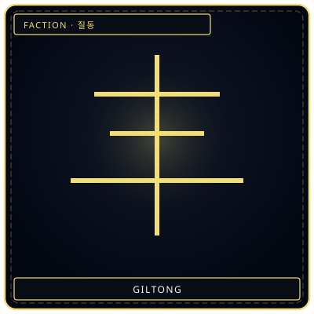
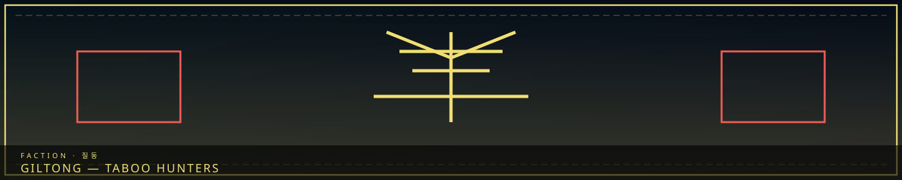
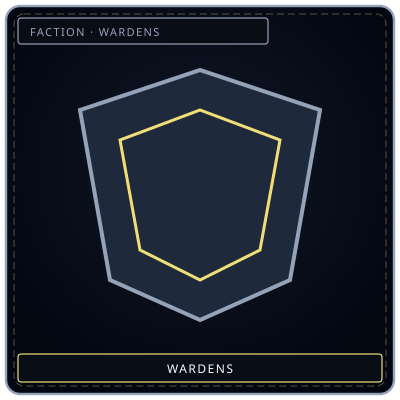

Seven strokesHunter mark
/// RAPID JUMP:
STATUS: ARCHIVE VERIFIED |
CLEARANCE: LEVEL-4 OVERSIGHT |
PROTOCOL: REVERIE DIRECTORATE
ARTICLE
DISCUSSION
SOURCE
HISTORY
YEAR 4,238 · DAWN OF HOPE
FACTIONS & GUILDS RECORD
The Giltong Enforcers (질동 — Taboo Hunters)
Contents
The seven laws themselves are the Seven Taboos. This page is the guild: Arbiter, Seniors, cases. Parallel elite: Judexhan.
“A hunter-mark of seven strokes. The tablets still number seven.”


WardensStreet vs sealGiltong Structure & Operations
Giltong Structure
`
THE GILTONG
│
├── The Arbiter (1) — Supreme authority on Taboo matters
│
├── Senior Giltong (7) — One per Taboo
│ └── Giltong Agents (5-10 per Taboo)
│
└── Support Staff
├── Investigators (research Taboo violations)
├── Containment Specialists (hold violators)
└── Archivists (record Taboo cases)
`
Total personnel: ~100
The Arbiter
Role: Supreme authority on Taboo matters — the final word on Taboo enforcement.
Who: A former Judexhan who was "retired" — their Han-crystal implant removed, their memories partially restored. The Arbiter is the only person who has seen both sides — the enforcement system and the Taboo system.
Authority:
- Can override any faction's authority on Taboo matters
- Can sentence Taboo violators directly — no trial needed
- Can authorize Taboo exceptions — in extreme circumstances
- Reports directly to the Council of Sighs
The Arbiter's burden: The Arbiter knows the Taboos exist for a reason — but they also know the Taboos have a cost. Every enforcement creates sorrow. Every punishment creates more Han. The Arbiter enforces the Taboos because they must — not because they believe they are just.
Giltong Operations
How they detect Taboo violations:
- Han-signature analysis — each Taboo violation leaves a unique Han signature
- Whisper Network — informants across all zones report suspicious activity
- The Veil Watchers — Menders who monitor the Veil for Taboo-related anomalies
- R.D. reports — the R.D. reports potential Taboo violations to the Giltong
How they respond:
- Detection — Taboo violation identified
- Investigation — Giltong Agents investigate the violation
- Containment — Violator is contained — if necessary
- Judgment — The Arbiter determines the sentence
- Enforcement — Sentence is carried out
- Documentation — Case is recorded in the Taboo Archive
Giltong equipment:
- Taboo Scanners — detect Taboo-related Han signatures
- Containment Bonds — Han-crystal restraints that suppress Taboo-related abilities
- The Arbiter's Blade — a weapon that cuts through Taboo violations — literally severing the connection between violator and violation
- Taboo Archive — records of every Taboo case in the city's history
Famous Taboo Cases
| Case | Taboo Violated | Violator | Sentence | Consequence |
|---|---|---|---|---|
| The Whispering Incident | No True AI | Unknown creator | Erasure of the AI | The AI screamed as it was destroyed — some say it still whispers |
| The Immunity Cult | No Han Immunity | A group of citizens | Exile to the Desolate | The cult still exists in the Desolate — immune to sorrow |
| The Time Keeper | No Time Reversal | A Weaver who tried to reverse time | Containment — the Weaver is now frozen in time | The Weaver exists in a single moment — forever |
| The Synthetic Sorrow | No Sorrow Synthesis | A Fray (Memory Washers) | Destruction of the synthetic sorrow | The synthetic sorrow fought back — it had become sentient |
| The Boundary Walker | No Cross-Boundary Fusion | A Desolate nomad | Containment — the nomad merged with Outside Sorrow | The nomad is now a living Fracture Zone |
| The Copy | No Echo-Core Duplication | Unknown | Fragmentation of the copy | The copy screamed — it was aware of what it was |
The Giltong and Other Factions
| Faction | Relationship |
|---|---|
| Council | Direct authority — the Giltong report to the Council |
| Architects | Neutral — Architects respect the Taboos |
| Collectors | Tense — Collectors sometimes violate Taboo 5 (Sorrow Synthesis) |
| Keepers | Cooperative — Keepers help with Taboo documentation |
| Wardens | Supportive — Wardens provide backup when needed |
| Weavers | Distrustful — Weavers sometimes push Taboo boundaries |
| R.D. | Complex — the R.D. pushes Taboo boundaries in research |
| Judexhan | Parallel — both enforce, but differently |
| Menders | Neutral — Menders sometimes witness Taboo violations |
| Frays | Hostile — Frays frequently violate Taboos |
CANONICAL RECORD: Sourced directly from the official Project Somnarak Worldbuilding Codex.
CANONICAL CROSS-LINKS & ATLAS CONNECTIONS